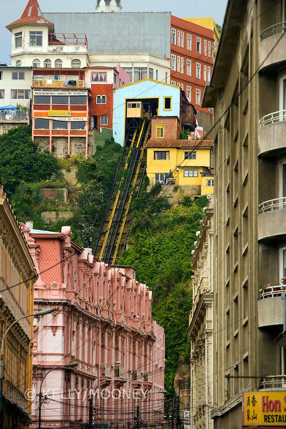

Área Histórica de Valparaíso
- Región: Valparaíso
- Comuna: Valparaíso
- Tipo de patrimonio: Cultural (zona histórica urbana)
- Fecha/año de declaración: Patrimonio de la Humanidad UNESCO desde 2003
- Estado de conservación: Protegido, Patrimonio Mundial UNESCO
La zona histórica del puerto de Valparaíso es reconocida por su arquitectura, ascensores y arte urbano, plasmando la identidad portuaria de Chile.